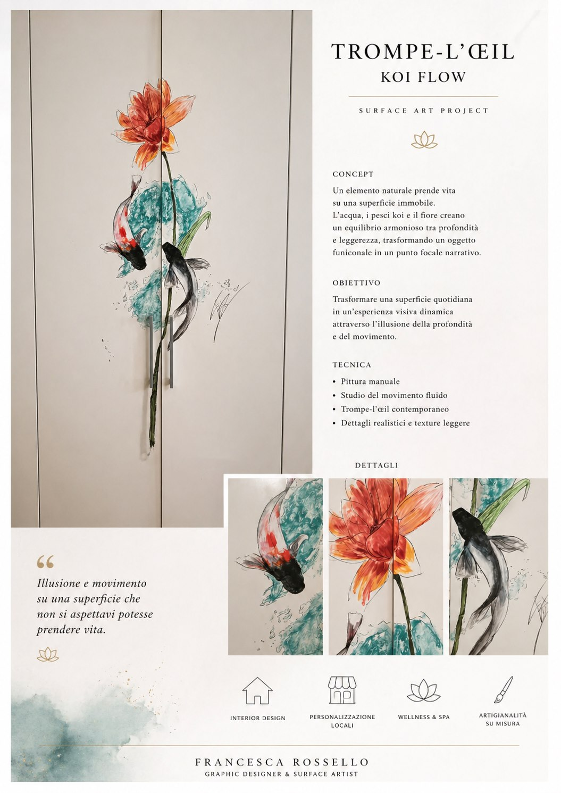

Trompe l'œil
Interventi decorativi su misura per dare profondità, atmosfera e carattere a pareti e ambienti.

Il servizio
Il trompe l'œil trasforma una superficie in un racconto visivo: finestre immaginarie, prospettive, dettagli architettonici o scenari decorativi pensati per dialogare con lo spazio.
- Studio dell'ambiente, della luce e dello stile esistente.
- Bozzetto e direzione visiva prima della realizzazione.
- Effetti prospettici, texture, dettagli pittorici e decorazioni su misura.
- Soluzioni per case, attività, vetrine, locali e ambienti da valorizzare.
Il risultato è una decorazione scenica ma raffinata, pensata per rendere lo spazio più personale e memorabile senza perdere eleganza.
Esempi visual
Progetti di superficie che uniscono illusione, pittura e racconto visivo, mantenendo leggibili proporzioni e dettagli.